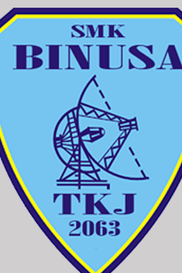

PROFIL SINGKAT
Mengenal Saya
Profil pribadi, nilai profesional, dan afiliasi sekolah.
Tentang Saya
Saya Muhammad Rafif Misbahuddin, S.Kom., M.Kom. Halaman ini menjadi ruang untuk memperkenalkan profil, latar belakang akademik, minat profesional, serta kontribusi dalam bidang pendidikan dan teknologi informasi.
Saya percaya bahwa teknologi yang dimanfaatkan dengan tepat dapat membuat proses pembelajaran menjadi lebih menarik, interaktif, dan mudah diakses. Saya juga terbuka terhadap kolaborasi dan pengembangan proyek yang mendukung peningkatan kompetensi digital.
Gelar akademikS.Kom., M.Kom.
Afiliasi sekolahSMK Bintang Nusantara Binusa
Minat profesionalPendidikan, teknologi informasi, media digital
AFILIASI SEKOLAH
SMK Bintang Nusantara
BINUSA

Teknik Jaringan Komputer dan Telekomunikasi
TJKT / TKJ